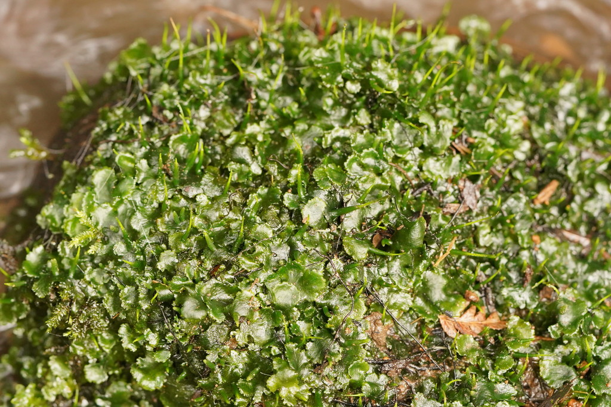

Dendrocerotales
A Hornwort Order
Dendrocerotales is an order of hornworts (division Anthocerotophyta) often characterized by strap-shaped or ribbon-like thalli and a tendency towards an epiphytic lifestyle (growing on other plants). They are distinguished by unique pseudoelaters with helical thickenings and often possess green spores.
Overview
Dendrocerotales is one of the major orders within the hornwort Class Anthocerotopsida. It includes genera such as Dendroceros, Megaceros, and Nothoceros, comprising about 40-50 species. This order is particularly diverse in tropical and subtropical regions.
A notable feature of the order, especially the genus Dendroceros, is the prevalence of epiphytism – many species grow on tree bark or leaves in humid forests, a less common habit among other hornwort orders which are primarily terrestrial. Their gametophytes are often narrow and elongated (strap-shaped) compared to the rosette-like thalli common in Anthocerotales. Unique microscopic features of the pseudoelaters and spores are key diagnostic characters for the order.
The genus Megaceros is also notable for uniquely possessing multiple small chloroplasts per cell, unlike the single large chloroplast found in most other hornworts (including Dendroceros).
Quick Facts
- Scientific Name: Dendrocerotales
- Common Name: A Hornwort Order
- Notable Genera: Dendroceros, Megaceros, Nothoceros
- Number of Species: Approximately 40-50
- Distribution: Primarily tropical and subtropical, often epiphytic (esp. Dendroceros) or on moist soil/rocks
- Evolutionary Group: Bryophytes - Hornworts (Anthocerotophyta) - Class Anthocerotopsida
Key Characteristics
Gametophyte (Thallus)
The gametophyte thallus is often distinctly strap-shaped or ribbon-like, sometimes dichotomously branched, and may possess a thickened central midrib. Some species (e.g., in Megaceros) can form large, robust thalli. Internal structure often includes large air chambers. While some grow on soil or rock, many species, particularly in Dendroceros, are epiphytic, growing on tree bark or leaves. Symbiotic Nostoc colonies are present in internal cavities.
Reproductive Structures (Gametangia)
Antheridia and archegonia are typically embedded within the dorsal surface of the thallus. Fertilization requires water.
Sporophyte
The sporophyte is generally similar in basic structure to that of Anthocerotales, but can be more slender:
- Morphology: Elongated, cylindrical capsule ("horn") arising from the gametophyte.
- Growth: Continuous growth from a basal meristem.
- Dehiscence: Typically splits into two longitudinal valves upon maturity.
- Stomata: Present on the sporophyte epidermis.
- Columella: Central sterile strand is present.
Spores and Pseudoelaters
Spores and pseudoelaters possess key diagnostic features for the order:
- Spores: Often green due to the presence of chloroplasts, indicating they may be short-lived and germinate quickly, sometimes even within the capsule (endosporic germination). Spores are typically trilete (tetrahedral scar) and may be unicellular or multicellular at maturity depending on the genus. Surface ornamentation varies.
- Pseudoelaters: Uniquely characterized by having distinct helical thickenings (spiral bands) on their walls, resembling the elaters found in liverworts (though non-homologous). They are multicellular.
Cellular and Chemical Features
Chloroplast number varies significantly within the order: genera like Dendroceros typically follow the common hornwort pattern of one large chloroplast per cell, while Megaceros is unique among hornworts in possessing multiple small, lens-shaped chloroplasts per cell, similar to vascular plants and most other land plants. The Nostoc symbiosis is present.
Field Identification
Identifying Dendrocerotales often involves considering habitat, thallus shape, and microscopic features.
Primary Identification Features
- Strap-shaped/Ribbon-like Thallus: Often narrow and elongated compared to rosette-forming hornworts.
- Epiphytic Habitat (Common): Frequently found growing on tree bark or leaves in humid environments (especially Dendroceros).
- Long, Erect Sporophyte: Similar to Anthocerotales, splitting into two valves.
- Green Spores: Often appear green when released (requires observation of fresh material).
- Pseudoelaters with Helical Thickenings: Definitive feature, but requires microscopy.
Secondary Identification Features
- Thallus with Midrib: Often present.
- Multiple Chloroplasts (Megaceros): Unique feature within hornworts, requires microscopy.
- Habitat: Besides epiphytic, also found on moist soil and rocks, especially in tropics/subtropics.
Seasonal Identification Tips
Observe different features depending on the season:
- Gametophyte: Present year-round in suitable habitats. Note the thallus shape and habitat (epiphytic or terrestrial).
- Sporophyte: Seasonal. Look for the typical long, horn-like structures. Examination of mature, dehiscing sporophytes is needed to observe green spores and pseudoelaters (microscopically).
Common Confusion Points
Dendrocerotales can be confused with:
- Other Hornwort Orders: Anthocerotales/Notothyladales are typically terrestrial with different pseudoelaters and often non-green spores. Leiosporocerotales has smooth, monolete spores.
- Strap-like Thalloid Liverworts (e.g., Metzgeriales): Some liverworts have similar ribbon-like thalli (e.g., Metzgeria, Pallavicinia), but they possess oil bodies, lack Nostoc colonies within the main thallus, and have very different sporophytes (typically ephemeral, non-photosynthetic capsule on a distinct seta) and true elaters (unicellular) without helical bands in the same way.
- Filmy Fern Gametophytes (Hymenophyllaceae): Can be ribbon-like or filamentous and grow epiphytically, but lack the characteristic hornwort sporophyte and internal structure.
Field Guide Quick Reference
Look For (Gametophyte):
- Strap-shaped/ribbon-like thallus
- Often epiphytic
- Often has midrib
- Nostoc colonies present
- Multiple chloroplasts in Megaceros (microscopic)
Look For (Sporophyte & Spores):
- Long, erect capsule (2 valves)
- Spores often green
- Pseudoelaters with helical bands (microscopic)
Notable Examples
This order includes genera adapted to epiphytic life and those with unique cellular features.

Dendroceros crispus
(Crisped Dendroceros)
A representative species of the genus often found growing epiphytically on tree bark or rocks in humid forests. It has a strap-shaped thallus, sometimes with crisped margins, and produces the characteristic long sporophytes of the order. Cells typically contain a single large chloroplast.

Megaceros spp.
(Giant Hornworts)
This genus includes some of the largest hornworts, forming robust, often dark green thalli, typically found on moist soil or rocks near streams. They are unique among hornworts for possessing multiple small chloroplasts per cell, lacking pyrenoids. Spores are green and multicellular.

Nothoceros spp.
(Southern Hornworts)
This genus, sometimes included within Phaeoceros (Anthocerotales) but often placed in Dendrocerotales based on pseudoelater structure, typically grows terrestrially. It shares the helical pseudoelaters characteristic of the order. Species occur in the Southern Hemisphere and parts of North America.
Phylogeny and Classification
Dendrocerotales is an order within the Class Anthocerotopsida, which includes all hornworts except the basal Leiosporocerotales. Within Anthocerotopsida, Dendrocerotales forms a distinct clade supported by molecular data and morphological features like the helical pseudoelaters.
The evolution of epiphytism within Dendroceros represents a significant ecological shift within hornworts. Furthermore, the presence of multiple chloroplasts in Megaceros is a remarkable convergence with the cellular structure of most other land plants and raises questions about chloroplast evolution within bryophytes.
Position in Plant Phylogeny
- Kingdom: Plantae
- Clade: Embryophytes (Land Plants)
- Division: Anthocerotophyta (Hornworts)
- Class: Anthocerotopsida
- Order: Dendrocerotales
Evolutionary Significance
Dendrocerotales is evolutionarily important for:
- Epiphytism in Bryophytes: Demonstrates the adaptation of hornworts to an epiphytic lifestyle.
- Pseudoelater Morphology: The unique helical pseudoelaters provide a key character for the order and invite comparisons with liverwort elaters.
- Chloroplast Evolution: The variation in chloroplast number (single vs. multiple) within the order (Dendroceros vs. Megaceros) is highly significant for understanding plastid evolution in early land plants.
- Spore Biology: Green spores and potential endosporic germination represent adaptations for rapid establishment, particularly relevant in epiphytic habitats.